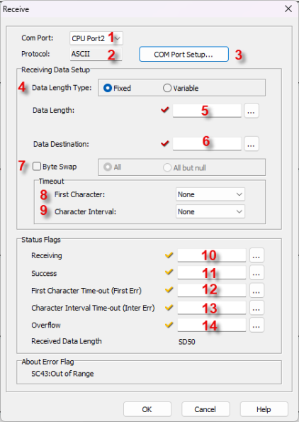
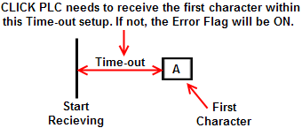

Topic: CL182

| Receive Instruction: ASCII |
Topic: CL182
|
The Receive instruction allows you to use Com Port 2 or 3 (if available) on the CLICK CPU modules, or Com Port 1 or 2 of a C2-DCM module, to receive ASCII text messages from external devices. The CLICK CPU modules support the MODBUS (RTU) and ASCII protocols. This help topic covers the ASCII protocol. Please refer to the help topic Receive Instruction: MODBUS for the MODBUS protocol.
|
|
Note: Port 1 on the CLICK Basic and Analog CPUs supports only the programming software and operator interfaces/HMI's. It does not support the Receive and Send instructions in a running program. Port 1 on the CLICK Ethernet and CLICK PLUS CPUs is an Ethernet port.
Note: For the Com Port wiring info, please refer to the CLICK PLC Hardware Manual or CLICK PLUS PLC Hardware Manual. |
|
The serial ports default to MODBUS protocol, but can be quickly changed to ASCII protocol. Click the COM Port Setup button to open the COM Port Setup dialog. When the dialog opens, select the desired COM Port and select ASCII in the protocol box.

1 Port ID: Click the down arrow to select a Port from the available list. Port 2 is default.
2 Protocol Type: This field displays the Protocol Type that is currently selected. The two choices are MODBUS and ASCII. To change from MODBUS to ASCII, see Item 3.
3 COM Port Setup: Click on this button to open the Com Port Setup window shown below. From this window click on the down arrow for the Protocol field and select ASCII or MODBUS.

|
|
Note: If the Protocol parameter is grayed out, it means that there is at least one Receive or Send instruction assigned to the Com Port already. If you still want to change the Protocol, please delete those Receive/Send instructions first. |
|
4 Data Length Type: Select Fixed or Variable Data Length Types. Fixed will have equal Data Length Types while Variable will have a Variable number of characters.

5 Data Length: Enter
or select using the Browse
Icon ,
the Bit to send the
Data Length.
,
the Bit to send the
Data Length.
6 Data Destination:
Enter or select using the Browse
Icon ,
the Bit the Data will be stored.
,
the Bit the Data will be stored.
7 Byte Swap: Select the checkbox if Byte Swap will be used. If selected, the ALL and All But Null selections will become active. Click one of these methods to select it.

8 First Character: Click on the down arrow and select a Time-out value from the drop down list for the First Character.

9 Character Interval: Click on the down arrow and select a Time-out value from the drop down list for the Character Interval.

10 Receiving: Assign a CBit as the Receiving flag. This flag turns ON when the com port is Receiving an ASCII message from the external device. Please refer to the Timing Chart shown below.
11Success: Assign a C Bit as the Success flag. This flag turns ON when the com port Received an ASCII message from the external device successfully. This flag turns OFF when the Enable input for this instruction is disabled. Please refer to the Timing Chart shown below.
12 First Character Time-out (First Err): Assign a CBit as the First Character Time-out flag. This flag turns ON if the com port could not Receive the First Character within the time period defined as the First Character Interval Timeout (see parameter #8). This flag turns OFF when the Enable input for this instruction is disabled. Please refer to the Timing Chart shown below.
13 Character Interval Time-out (Inter Err): Assign a CBit as the Character Interval Time-out flag. This flag turns ON if the com port could not Receive the next Character within the time period defined as the Character Interval Timeout (see parameter #9). This flag turns OFF when the Enable input for this instruction is disabled. Please refer to the Timing Chart shown below.
14 Overflow: Assign a C Bit as the Overflow flag. This flag turns ON if the com port Received more than 128 characters. This flag works only when the Data Length Type is variable (see parameter #4). This flag turns OFF when the Enable input for this instruction is disabled. Please refer to the Timing Chart shown below.